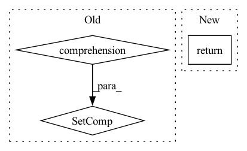

Pattern ID :3587
Before Change
with concurrent.futures.ThreadPoolExecutor() as executor:
// Schedule the first N futures. We don"t want to schedule them all
// at once, to avoid consuming excessive amounts of memory.
futures = {
executor.submit(self.compute_func, task)
for task in itertools.islice(tasks, self.simultaneous_tasks)
}
while futures:
// Wait for the next future to complete.
done, futures = concurrent.futures.wait(After Change
}
for _ in tqdm(concurrent.futures.as_completed(futures), **kwargs):
pass
return futures
In pattern: SUPERPATTERN
Frequency: 4
Non-data size: 3
Instances Fragment ID: 13626463
Project Name: dsgoficial/pytorch_segmentation_models_trainer
Commit Name: 0bfae1005a07bd2600614e2e59d704e9c1258954
Time: 2021-04-19
Author: philipeborba@gmail.com
File Name: pytorch_segmentation_models_trainer/tools/parallel_processing/process_executor.py
M Class Name: Executor
N Class Name: Executor
M Method Name: execute_tasks(2)
N Method Name: execute_tasks(2)
M Parent Class:
N Parent Class:
M File Name: pytorch_segmentation_models_trainer/tools/parallel_processing/process_executor.py
N File Name: pytorch_segmentation_models_trainer/tools/parallel_processing/process_executor.py
M Start Line: 33
M End Line: 52
N Start Line: 38
N End Line: 50
Before Change
for step in trial["steps"]:
try:
v_metrics = step["validation"]["metrics"]["validation_metrics"]
return {metric for metric, value in v_metrics.items() if is_number(value)}
except Exception:
pass
return set()After Change
metrics = workload.validation.metrics
if not metrics:
continue
return set(metrics.keys())
return set()
Fragment ID: 13626462
Project Name: determined-ai/determined
Commit Name: 1b3e764118242255b4f3fb32c2a969cf2ae752c5
Time: 2022-03-15
Author: nick.doiron@hpe.com
File Name: harness/determined/cli/experiment.py
M Class Name: AnonimousClass
N Class Name: AnonimousClass
M Method Name: scalar_validation_metrics_names(1)
N Method Name: scalar_validation_metrics_names(1)
M Parent Class:
N Parent Class:
M File Name: harness/determined/cli/experiment.py
N File Name: harness/determined/cli/experiment.py
M Start Line: 516
M End Line: 524
N Start Line: 567
N End Line: 574
Before Change
return self.materializer_types[key]
// If the type is not registered, check for superclasses
materializers_for_compatible_superclasses = {
materializer
for registered_type, materializer in self.materializer_types.items()
if issubclass(key, registered_type)
}
// Make sure that there is only a single materializer
if len(materializers_for_compatible_superclasses) == 1:
return materializers_for_compatible_superclasses.pop()After Change
for class_ in key.__mro__:
materializer = self.materializer_types.get(class_, None)
if materializer:
return materializer
raise StepInterfaceError(
f"No materializer registered for class {key}. You can register a " Fragment ID: 13626461
Project Name: maiot-io/zenml
Commit Name: a1c22f9f88070a7404913377fd5719c3d0632adc
Time: 2023-03-03
Author: schustmi@users.noreply.github.com
File Name: src/zenml/materializers/default_materializer_registry.py
M Class Name: MaterializerRegistry
N Class Name: MaterializerRegistry
M Method Name: __getitem__(2)
N Method Name: __getitem__(2)
M Parent Class:
N Parent Class:
M File Name: src/zenml/materializers/default_materializer_registry.py
N File Name: src/zenml/materializers/default_materializer_registry.py
M Start Line: 80
M End Line: 102
N Start Line: 78
N End Line: 83
Before Change
raise TypeError("n must be either an integer or a float")
counter = Counter(self.triples[:, 1])
return {
relation
for relation, _ in counter.most_common(n)
}
def get_idx_for_entities(self, entities: Collection[str], invert: bool = False):
Get np.array indices for triples with the given entities.
entities = np.asanyarray(entities, dtype=self.triples.dtype)After Change
uniq, counts = self.mapped_triples[:, 1].unique(return_counts=True)
top_counts, top_ids = counts.topk(k=n, largest=True)
return set(uniq[top_ids].tolist())
def entities_to_ids(self, entities: Union[Collection[int], Collection[str]]) -> Collection[int]:
Normalize entities to IDs. Fragment ID: 13626460
Project Name: pykeen/pykeen
Commit Name: a007a273ff146107fd1b0c099d561c7b7279965a
Time: 2020-12-10
Author: berrendorf@dbs.ifi.lmu.de
File Name: src/pykeen/triples/triples_factory.py
M Class Name: TriplesFactory
N Class Name: TriplesFactory
M Method Name: get_most_frequent_relations(2)
N Method Name: get_most_frequent_relations(2)
M Parent Class:
N Parent Class:
M File Name: src/pykeen/triples/triples_factory.py
N File Name: src/pykeen/triples/triples_factory.py
M Start Line: 466
M End Line: 474
N Start Line: 595
N End Line: 597